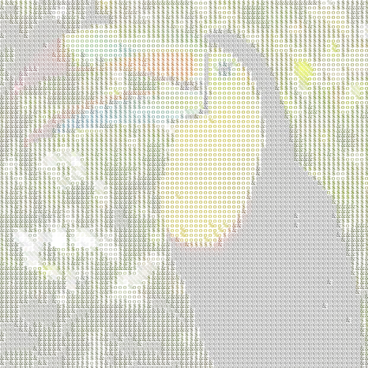
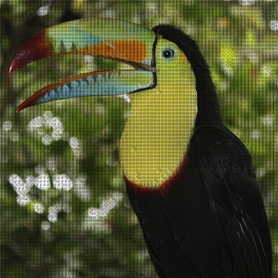

Image to ASCII
Change Pixels for Characters
La siguiente publicación presenta un programa que consigue manipular cada uno de los pixeles de una imagen y asignarle un carácter dependiendo de las propiedades del mismo, reconstruyendo una imagen completa por medio de caracteres ASCII.
Para realizar este proceso es importante definir una cadena de caracteres que se guarda en un arreglo y donde su tamaño máximo es de 256 posiciones, cada una de ellas representará el brillo del píxel. Una vez creado el arreglo se procederá a dibujar cada uno de estos caracteres dependiendo del brillo correspondiente del pixel y su posición, para facilitar este proceso es recomendable pasar la imagen a escala de grises con cualquiera de los métodos vistos en el ejemplo GRAYSCALE IMAGE.
Se recomienda asignar símbolos que más ocupan espacio como '#' en las primeras posiciones de caracteres de la cadena para representar las partes oscuras e ir colocando caracteres que ocupan menos espacio como por ejemplo '.' en las últimas posiciones para representar partes claras de la imagen, pero no es indispensable ya que también se maneja el nivel de resolución que puede tener cada uno de los caracteres ASCII.
Como valor agregado se les dio color a los caracteres ASCII haciendo uso de una técnica similar a la vista en el ejemplo POINTILLISM, donde se capturaba el color de un pixel aleatorio para asignárselo como relleno a una elipse; en este caso también se capturará el color del pixel en la posición XY del pixel, para asignárselo al carácter ASCII como relleno y contorno en esa misma posición XY.
Comandos por teclado
| ASCII | Caracteres a Color | Bordes a Color | Repintado | Transición Horizontal | Transición Diagonal | Imagen Original |
|---|---|---|---|---|---|---|
 |
 |  |
 |
 |
 |
 |
 |
 |
 |
 |
 |
 |
 |
Tecla Descripción Imagen Image of Ramphastos sulfuratus, also known as Sulfur-Breasted Toucan or Rainbow-Billed Toucan. Source: Wikipedia, the free encyclopedia. Keel-billed toucan at Parque Municipal Summit, Panama
Image of Peacock Spiders Maratus volans, is a species in the jumping spider family (Salticidae). Source: Wikipedia, the free encyclopedia. A reduced-resolution but still truly exceptional image of a male Maratus volans Peacock Spider
Image of Mantis shrimp species Odontodactylus Scyllarus. Source: Wikipedia, the free encyclopedia. Closeup of a stomatopod crustacean (mantis shrimp) Odontodactylus scyllarus
Image of Golden Snub-Nosed Monkey (Rhinopithecus roxellana) is an Old World monkey. Source: Wikipedia, the free encyclopedia. Rhinopithecus roxellana, Female and male in Shanghai Zoo


p5*js Code
let img;
let img2;
// Resolucion: los colores se muestran cada n pixeles
let resolution = 6;
let repaint = 0; // Controla la cantidad de veces que se ejecuta asciify();
let intensity = 1; // Validacion del modo de pintado de los caracteres
// Contiene los caracteres que van a reemplazar cada pixel
let ascii=[];
let link='https://upload.wikimedia.org/wikipedia/commons/thumb/2/2d/Keel-billed_toucan.jpg/466px-Keel-billed_toucan.jpg';
function preload() {
img = loadImage(link);
img2 = loadImage(link);
}
function setup() {
createCanvas(466, 600);
background(255);
fill(0);
noStroke();
// Construye una matriz de caracteres que corresponda a los valores del brillo
let letters = "@&$o%#*+=-':. ";
for (let i = 0; i < 256; i++) {
let index = int(map(i, 0, 256, 0, letters.length));
ascii[i] = letters.charAt(index);
}
let mono = textFont("Georgia", resolution + 2);
textFont(mono);
}
function draw(){
if (repaint < 1){
asciify();
repaint += 1;
}
}
function asciify() {
// Se convierte la imagen a escala de grises para que sea mas preciso calcular el brillo
img.filter(GRAY);
img.loadPixels();
img2.loadPixels();
// Se recorre cada pixel de la imagen
for (let y = 0; y < img.height; y += resolution) {
for (let x = 0; x < img.width; x += resolution) {
let index = (x+y*width)*4; // Posicion del pixel
let r=img.pixels[index+0]; // Componente Red
let g=img.pixels[index+1]; // Componente Green
let b=img.pixels[index+2]; // Componente Blue
let a=img.pixels[index+3]; // Componente Alpha
// Componenetes sin modificaciones
let R=img2.pixels[index+0]; // Componente Red
let G=img2.pixels[index+1]; // Componente Green
let B=img2.pixels[index+2]; // Componente Blue
let A=img2.pixels[index+3]; // Componente Alpha
asciiPaint(R,G,B,A,x,y); // Color de los caracteres
// Toma el color del n-simo pixel y lo reemplza con el caracter de brillo similar
text(ascii[int(brightness(color(r,g,b,a)))], x, y); // Dibuja los caracteres
}
}
}
// Se ejecuta cuando se presiona cualquier tecla
function keyPressed() {
if (key === '0') { // Imagen original
resetCanvas(width,height);
image(img2,0,0);
} else if (key === '1') { // Caracteres en negro
intensity=1;
resetCanvas(width,height);
} else if (key === '2') { // Caracteres a color
intensity=2;
resetCanvas(width,height);
} else if (key === '3') { // Borde caracteres a color
intensity=3;
resetCanvas(width,height);
} else if (key === '4') { // Repintar caracteres en el lienzo
intensity=4;
resetCanvas(width,height);
} else if (key === '5') { // Repintado horizontal
intensity=5;
resetCanvas(width,height);
repaint=-1;
} else if (key === '6') { // Repintado diagonal
intensity=6;
resetCanvas(width,height);
repaint=-1;
}
}
// Resetea el lienzo y el contador de pintado
function resetCanvas(w,h){
resizeCanvas(0, 0);
resizeCanvas(w, h);
repaint=0;
}
// Define el color de los caracteres ASCII
function asciiPaint(R,G,B,A,x,y){
if (intensity===1){
fill(0);
noStroke();
} else if (intensity===2){
fill(R,G,B,A);
noStroke();
} else if (intensity===3){
fill(R,G,B,A);
stroke(R,G,B,A);
} else if (intensity===4){
fill(R,G,B,A);
stroke(R,G,B,A);
repaint=-10;
} else if (intensity===5){
if (x>floor(width/3)){
fill(R,G,B,A);
} else {
fill(0);
}
if(x>floor(width/3)*2){
stroke(R,G,B,A);
} else {
noStroke();
}
} else if (intensity===6){
if (x/2+y*2>floor((width+height)/3)){
fill(R,G,B,A);
} else {
fill(0);
}
if(x*2+y/2>floor((width+height)/3)*2){
stroke(R,G,B,A);
} else {
noStroke();
}
}
}